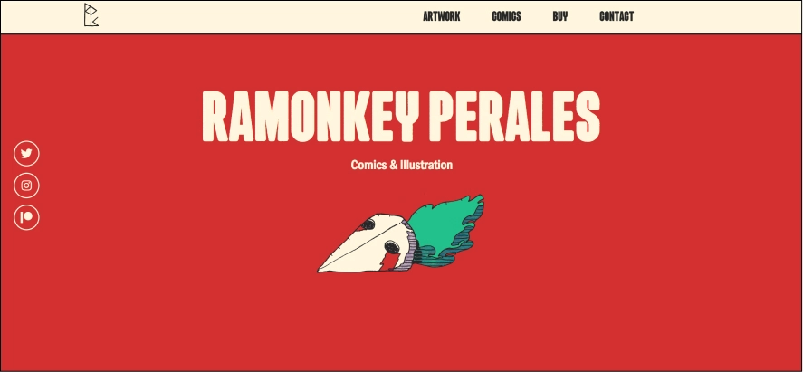
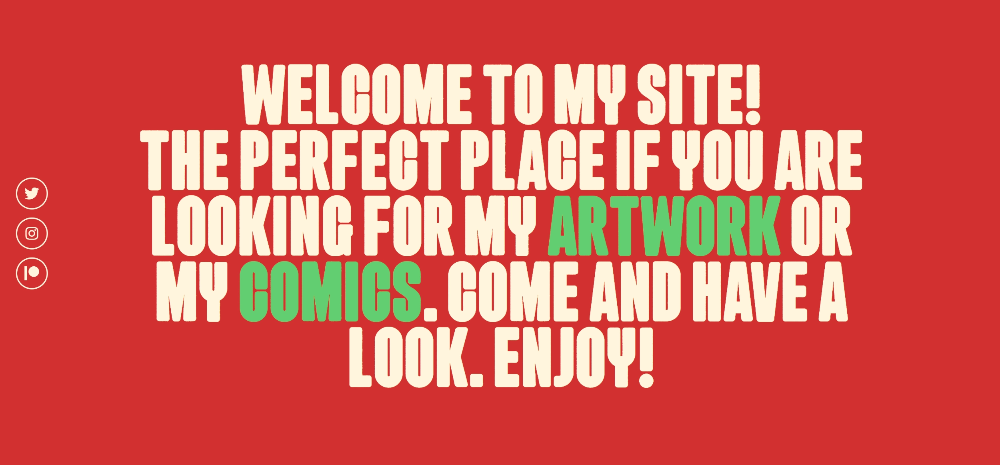
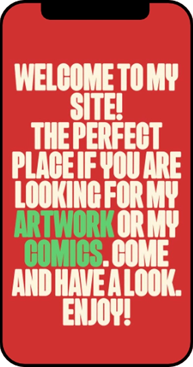
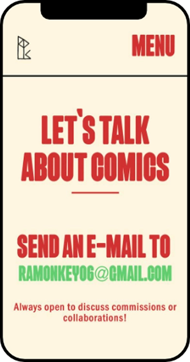
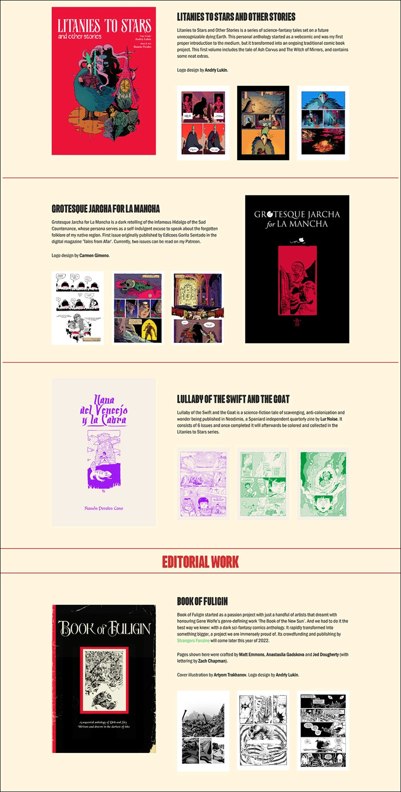

proyecto - Ramonkey Perales
Diseño web
Ramonkey Perales es un ilustrador y artista de cómics.La web se centra en mostrar su trabajo pero a la vez se busca un diseño llamativo y memorable
Visita la página web



La web se diseña y se trabaja en versión escritorio y móvil.
